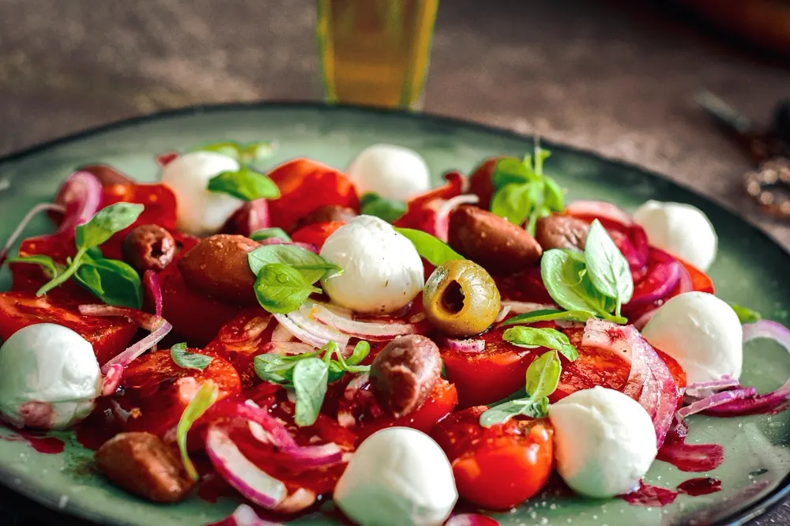
Salada Caprese
+ molho pesto
60 RECEITAS
para montar em casa e ter salada pronta na geladeira a semana toda, fresquinha e sem murchar.
Quero as receitas!Acesso imediato no seu e-mail · Pagamento único
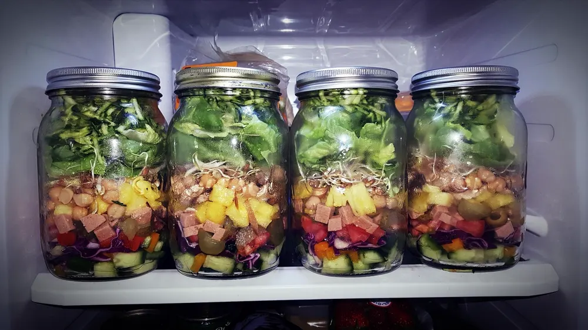

+ molho pesto
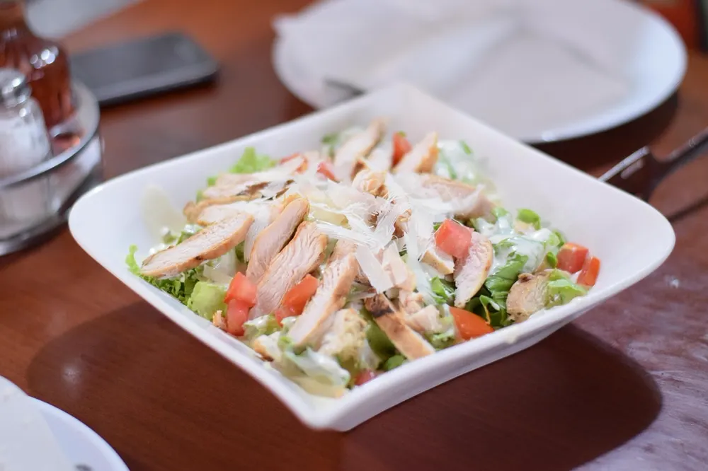
+ molho caesar caseiro
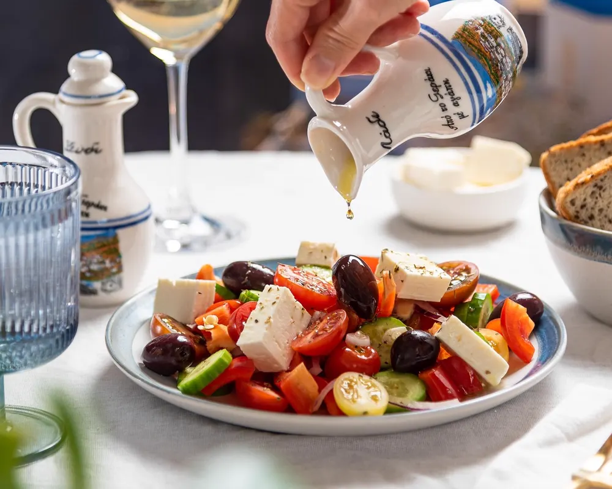
+ vinagrete de limão
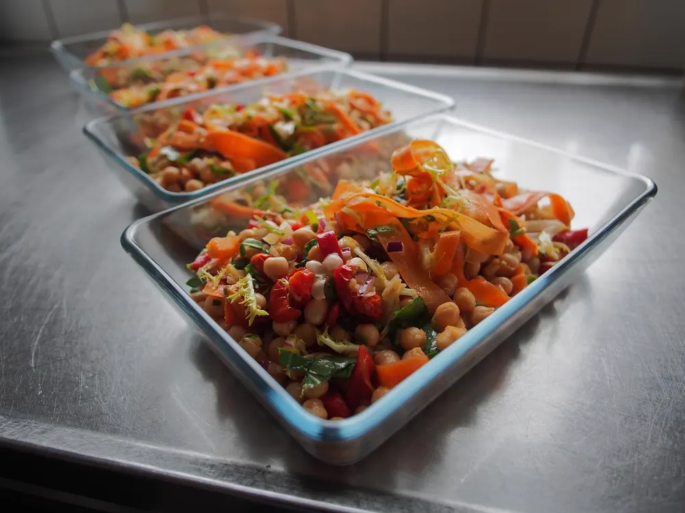
+ molho de iogurte
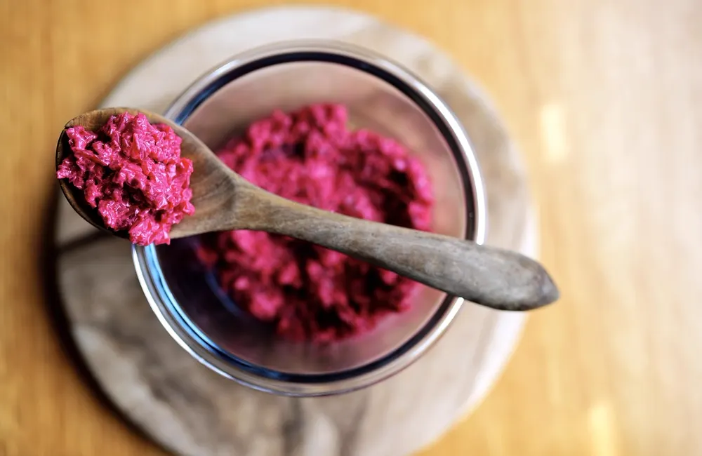
+ mostarda e mel
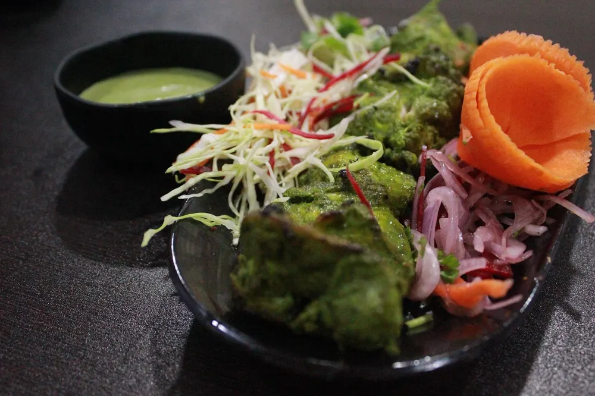
+ molho de ervas
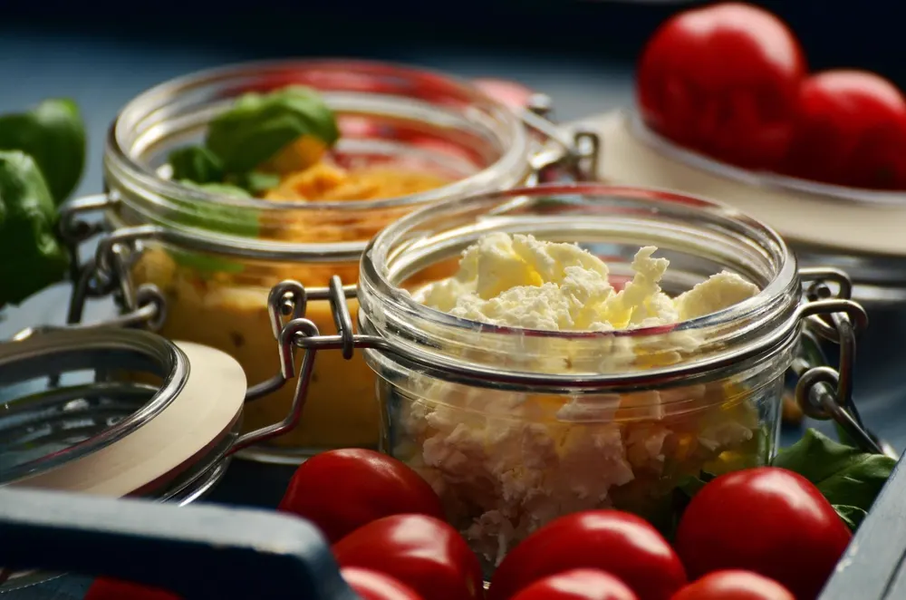
+ molho agridoce
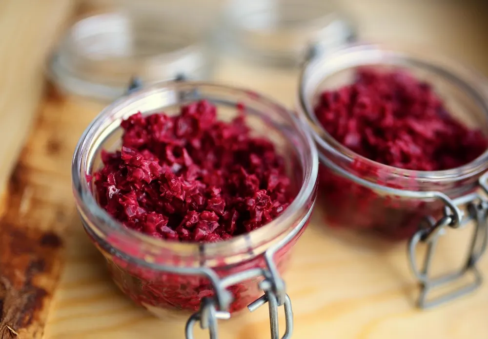
+ molho cítrico
…e mais 52 receitas te esperando!
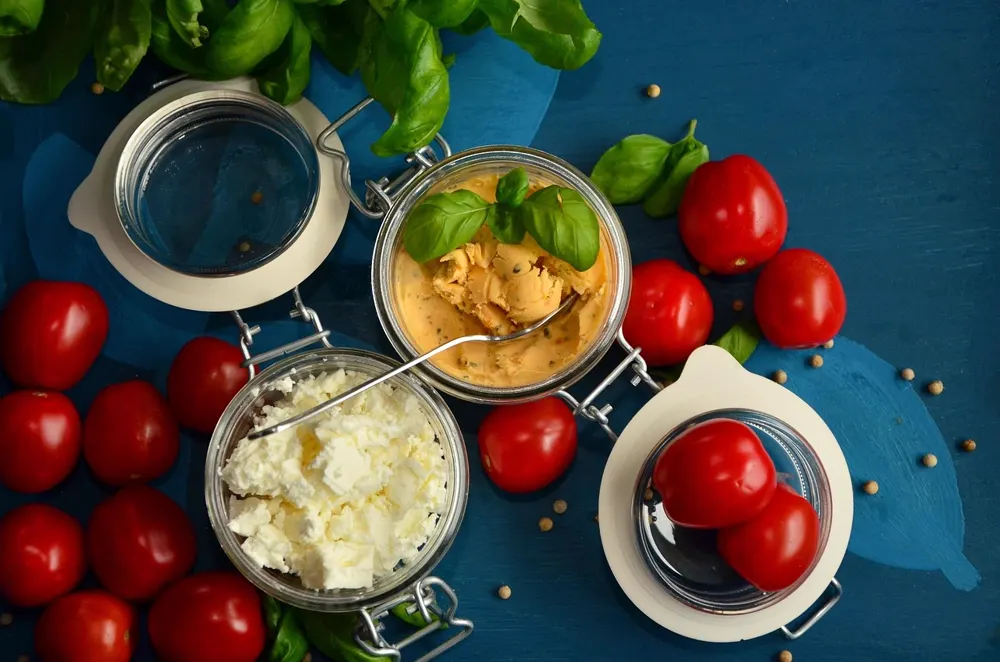
Na hora de comer, é só virar no prato ou chacoalhar o pote. Cada receita traz a ordem certa das camadas.
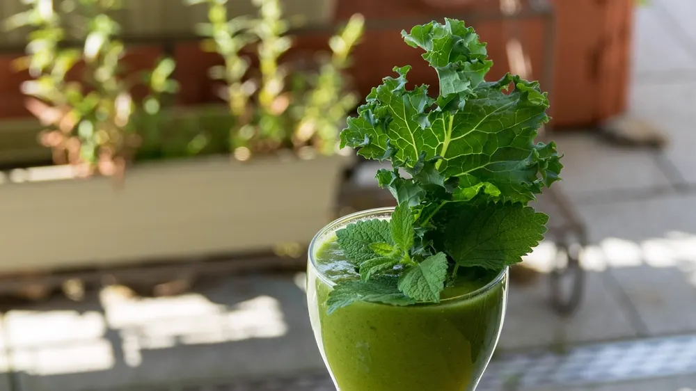
20 receitas
GRÁTIS HOJE5 receitas
GRÁTIS HOJE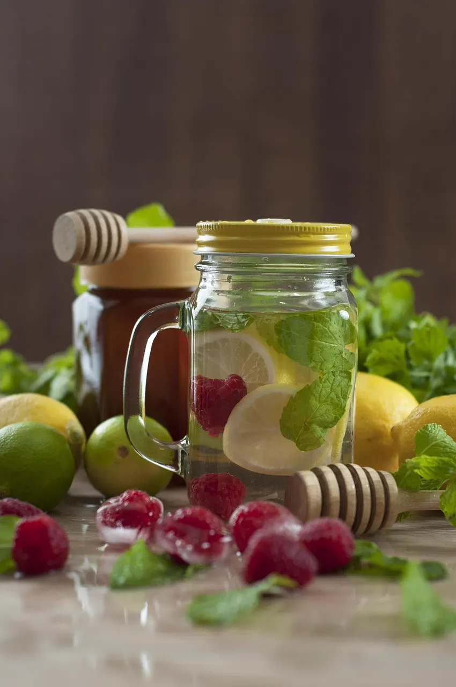
15 receitas
GRÁTIS HOJE10 receitas ricas em proteína
GRÁTIS HOJEMarque as que mais combinam com você
Separe as saladas da semana e faça uma compra só no mercado.
Em cerca de 30 minutos você monta os potes seguindo a ordem das camadas.
É só pegar um pote na geladeira. Salada fresca por até 5 dias.
De R$ 97,00
por apenas
R$29,90
Pagamento único · Acesso imediato
Você tem 7 dias para conhecer as receitas. Se por qualquer motivo não gostar, é só mandar um e-mail que devolvemos 100% do valor, sem perguntas.
É 100% digital. As receitas e os bônus chegam no seu e-mail logo depois da compra, prontos para abrir no celular, tablet ou computador. Se preferir, pode imprimir em casa. Não tem frete nem espera.
Assim que o pagamento é confirmado, você recebe no e-mail o acesso a todas as receitas, aos molhos e aos bônus. No Pix e no cartão, a liberação é na hora. Se não encontrar, confira a caixa de spam e de promoções.
Sim! Você tem 7 dias de garantia. Se não gostar, é só pedir o reembolso por e-mail dentro desse prazo e devolvemos 100% do valor.
Não! Qualquer pote que você já tem em casa funciona: vidro ou plástico, grande ou pequeno. O importante é ter uma boa vedação para manter a salada fresca.
Sim! As saladas vêm com sugestões de molhos caseiros, fáceis de fazer, que mudam completamente o sabor.
Montada do jeito certo, com o método das camadas, a salada fica fresca por até 5 dias na geladeira. Monte no domingo e coma bem a semana toda.
Dá, e é exatamente isso que a gente ensina. Em cerca de 30 minutos você deixa os potes da semana prontos, muito mais prático do que picar salada todo dia.
Pode! Muita gente usa as receitas para vender e ter uma renda extra. O preço depende da sua região e dos ingredientes.
Super fáceis! Todas têm instruções claras e passo a passo simples. Se você sabe picar, misturar e temperar, consegue fazer.
Sim! São ingredientes simples, de qualquer supermercado ou feira. Nada exótico ou caro.
Não precisa. Só potes, colheres, uma faca e uma tábua. Só isso.
Nossos produtos são 100% digitais. Não há versão impressa nem envio pelos Correios. O acesso é enviado ao e-mail informado na compra assim que o pagamento é confirmado.
Conforme o art. 49 do Código de Defesa do Consumidor, você pode desistir da compra em até 7 dias corridos a partir da data do pagamento, sem precisar justificar. O valor é devolvido integralmente pelo mesmo meio de pagamento.
Envie um e-mail para com o e-mail usado na compra e o número do pedido. Respondemos em até 2 dias úteis.
Se não encontrar o e-mail de acesso, confira as pastas de spam e promoções ou fale com a gente que reenviamos sem custo.
Esta política explica como tratamos seus dados pessoais, em conformidade com a Lei Geral de Proteção de Dados (Lei 13.709/2018).
Com a plataforma de pagamento, com o serviço de entrega do produto digital e com ferramentas de análise e publicidade, apenas no necessário para essas finalidades. Não vendemos seus dados.
Os dados do cartão são processados diretamente pela plataforma de pagamento e não ficam armazenados conosco.
Você pode pedir acesso, correção ou exclusão dos seus dados a qualquer momento pelo e-mail .
O material é digital e entregue por e-mail após a confirmação do pagamento.
Ao comprar, você recebe uma licença pessoal e intransferível. Não é permitido copiar, revender, compartilhar ou distribuir o material, no todo ou em parte.
Textos, receitas, imagens e design são protegidos pela lei de direitos autorais (Lei 9.610/1998).
O conteúdo tem fins culinários e informativos e não substitui a orientação de um nutricionista ou médico. Verifique alergias e restrições antes de preparar as receitas.
Segue a nossa Política de reembolso, com garantia de 7 dias.
Dúvidas: .